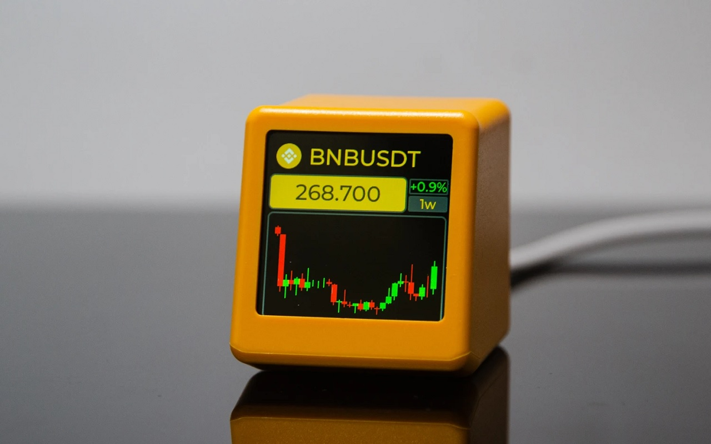

Криптовалютный трекер

Полезное устройство для трейдеров холдеров. Подключается по Wi-Fi к роутеру и показывает курсы и графики выбранных криптовалют.
Просыпаясь можно видеть курсы еще до того как включется компьютер. по сути это боле продвинутый электронный будильник.
Питается от USB Type-C. Купить CryptoTracker на Aliexpress
Аппаратный криптокошелек SafePal S1
Лучший и самый безопасный криптокошелек на рынке. Исключает утечку сид фразы по USB, так как все подписи транзакций осуществляются с помощью встроенной камеры и QR кодов.
Управлять кошелком так же можно через браузерное расширение SafePal, это так же исключат утечку по сравнению с обычными браузерными кошельками,
например если на компьютере установлен скрытый вирус кейлогер, так же утечка может произойти через скриншоты рабочего стола которая делает Windows каждый раз ппосле старта, все это исключено с SafePal S1. Купить SafePal на Aliexpress